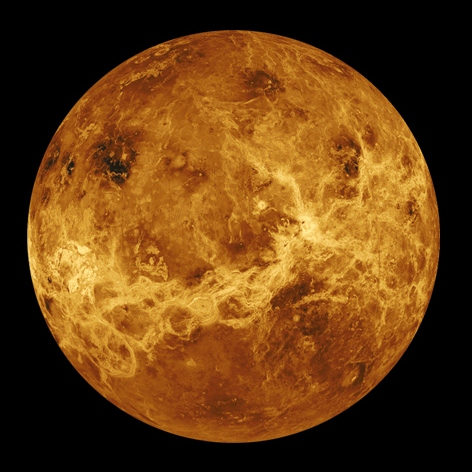
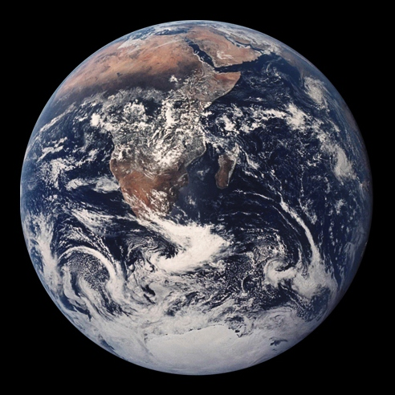
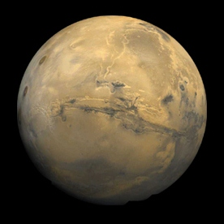

The Solar Planets
OVERVIEW
COMPARISONS
DETAILS
Click on the slider to change the years for EARTH
1
0
250
500
750
1000
Tip: Click on the planets' name ☺
Surface Temperature
Length of the Day
Distance from Earth
More Facts
More Facts
More Facts
Earth
Terrestrial planet
  
12756 km
Rotation Period
1 day
Atmospheric Composition
78% N2+ 21% O2
100kg Man on this Planet based on Gravity
100 kg
Mean Atmospheric Orbital Velocity
29.79 km/sec
Mass
1 Earth
Orbital Eccentricity
0.0167